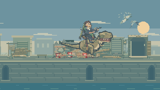
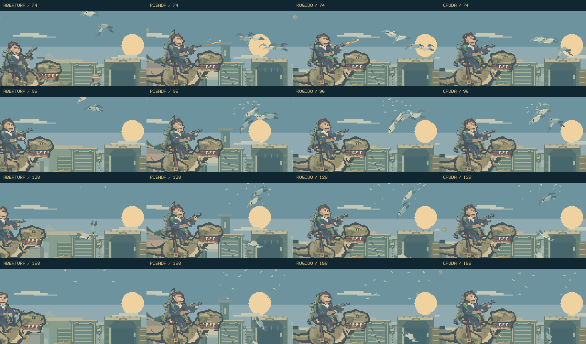
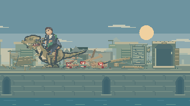
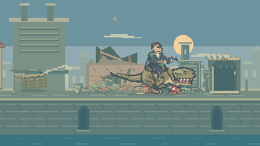
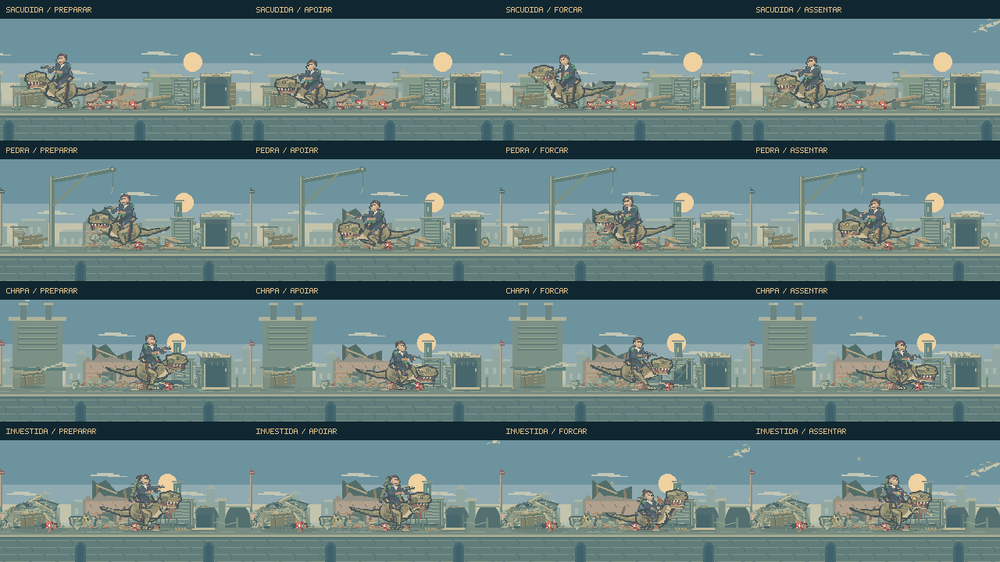
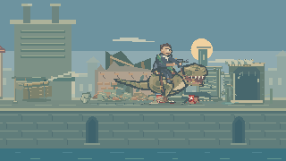
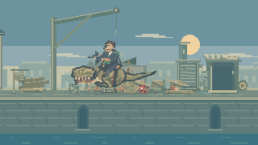
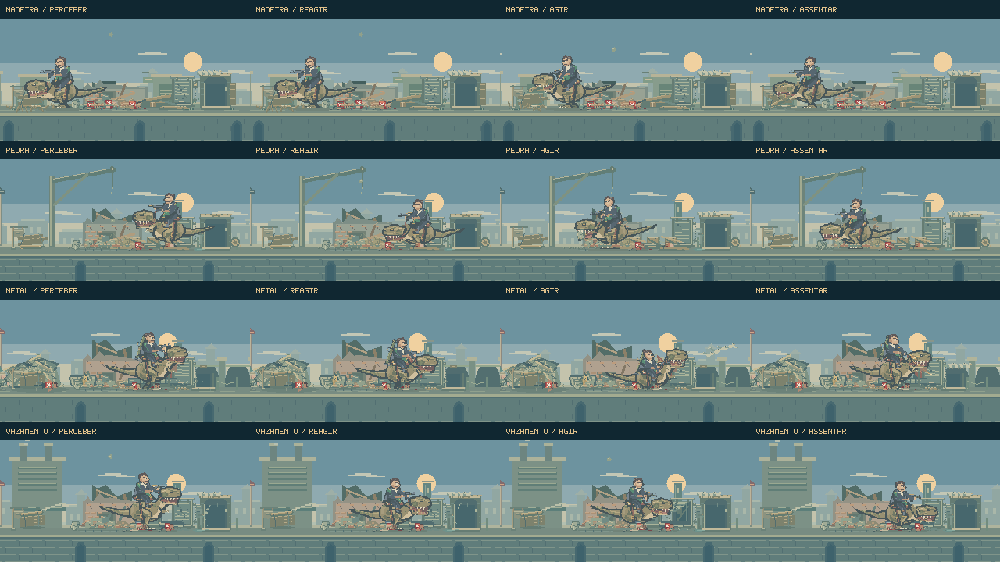
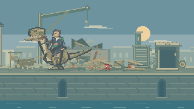
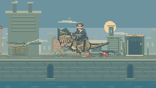

Ouvir. Investigar.
Atacar.
O dinossauro firma as patas antes de puxar ou atacar. Os impactos repercutem em panos, correntes e água acumulada. Agora, os bandos reagem aos materiais e o cavaleiro acompanha as aves em fuga com o fuzil. Doze performances se alternam enquanto Feka atravessa os pátios.
Jogar o encontroVer o novo polimento- Atenção
- Esforço
- Sacudida
- Investida + rajada
- Consequências
A torre abre a sequência do Bastião: lançamento, queda e busca entre os escombros acontecem antes dos novos eventos ambientais. Ver a cena da torre.
O susto tem uma consequência.
Uma pisada, um rugido ou um golpe de cauda põem o bando em movimento. As aves saltam do apoio em momentos diferentes, aceleram e fazem uma curva sobre o pátio. O cavaleiro ergue o fuzil, acompanha um alvo e muda de alvo entre os disparos.
16 segundos, a 60 quadros por segundo: quatro recortes de animações escolhidas pelo diretor do jogo, com Feka mantido em posições de composição. Sem áudio e sem combate em primeiro plano; não é uma partida gravada. Os sons de asas, disparos e contatos estão integrados ao jogo.
Acerto no voo, queda no cenário.
O projétil sai na direção do cano e precisa cruzar a ave para acertar. As atingidas perdem sustentação, giram, soltam penas e caem no pavimento, com um pequeno ressalto e acomodação. As sobreviventes continuam fugindo.
Há dois desenhos de plumagem, asas articuladas e tempos diferentes de decolagem. Os pés se apoiam nos beirais; as aves sobre uma pilha deixam o apoio quando a peça se desloca.

Variação sem reiniciar o lugar.
A combinação alterna três preparações e três cadências. Os eventos ambientais mais discretos esperam a passagem principal terminar. Depois de um intervalo de calma, um novo bando entra pelas bordas e pousa nos apoios que continuam inteiros.
As buscas ganharam farejadas e pequenas expirações; as ações com várias cadências evitam repetir a variação anterior. O lançamento da torre, sua prioridade no Bastião e as margens de enquadramento ajustadas para evitar cancelamentos foram preservados, assim como a busca existente nos escombros.

Registro de composição · Direção e implementação. Os vídeos abaixo documentam as rodadas anteriores.
Firmar o apoio. Transmitir o impacto.
Composição dirigida de 14,6 segundos, a 30 quadros por segundo, produzida pelo renderizador do jogo. Posições de Feka mantidas, sem áudio e sem combate em primeiro plano. Não é uma partida gravada ou avaliação de dificuldade.
O corpo se move sobre as patas.
Uma pata de cada vez encontra o apoio antes do esforço. Durante a puxada, o tronco e os joelhos trabalham enquanto as patas permanecem no mesmo lugar. Ao terminar, o dinossauro desfaz a postura com pequenos passos.
A caminhada até alvos próximos ficou mais curta. Se ele já está na posição certa, segue para a preparação da ação. A poeira dos passos acompanha o ponto de apoio mostrado pelo desenho.


O pátio sente o movimento.
Panos recebem um tranco a partir das amarrações. Correntes oscilam e perdem força aos poucos. Onde um vazamento já deixou água, pequenas ondulações cruzam a poça.
Essas reações chegam primeiro aos objetos próximos e enfraquecem com a distância. Pedaços que caem juntos produzem um único impulso, deixando o impacto legível entre os detalhes do ambiente.

Registro da composição e das posições de apoio · Reações por material da rodada anterior
O ruído muda o que acontece depois.
Nova composição de 24 segundos, a 30 quadros por segundo. Quatro trechos selecionados das atividades nativas, com posições de Feka mantidas. Sem áudio e sem combate em primeiro plano; não é uma partida ou avaliação de dificuldade.
Perceber, reagir e agir.
Madeira: a cabeça baixa e faz duas inspeções curtas antes de uma nova busca. Pedra: o olhar acompanha o piso, com uma inclinação mais profunda.
Metal: o dinossauro se contrai e firma o corpo. Vazamento: recua o focinho, fecha os olhos por um instante e solta um sopro antes de voltar a observar a estrutura. O cavaleiro acompanha essas reações com um pequeno atraso.


O impacto começa onde houve contato.
Farpas de madeira, lascas de pedra e pequenas partículas metálicas saem da altura atingida. A poeira junto ao piso aparece quando os fragmentos chegam ao chão. Um ruído breve acompanha essa chegada.
Os pequenos acontecimentos ambientais usam o mesmo cuidado: a corrente solta resíduos na altura dos elos; as pedras e a madeira respondem junto às suas superfícies. As peças maiores preservam a posição e o desgaste das interações anteriores.

Registro dos quatro trechos e das ações seguintes · Repertório completo da rodada anterior
Quatro pátios, materiais que respondem.
120 segundos de composições dirigidas, a 30 quadros por segundo, com o renderizador do jogo. Posições de Feka mantidas em cada pátio; sem áudio e sem o combate em primeiro plano. Não é uma partida gravada ou avaliação de dificuldade.

Uma ação tem peso e resposta.
A nova sacudida começa com pegada e esforço para erguer a viga. Cabeça e madeira mudam de direção juntas; o cavaleiro reage com um pequeno atraso, segurando as rédeas. Depois, a mesma peça cai e se acomoda no chão.
Na outra combinação, o dinossauro investe contra o material, recua e abre espaço para a rajada do cavaleiro. Há uma pausa curta entre os dois impactos principais.
O lugar também toma a iniciativa.
Uma pedra se acomoda. A corrente vibra. Uma junta começa a vazar. Esses acontecimentos podem atrair a atenção do dinossauro e motivar uma nova busca.
Madeira, pedra e metal têm respostas distintas. Panos presos, marcas de umidade, pequenas folhas ao vento e aves que pousam, bicam e voltam a fugir dão movimento ao pátio entre os ataques.


O esforço vem antes da soltura.
O dinossauro se aproxima, segura a viga e firma o corpo antes de puxar. A cabeça eleva o material enquanto o cavaleiro compensa com o tronco e as rédeas. Há tempo para perceber o peso antes de a peça ser largada.
Depois da queda, ela quica e se acomoda. A busca seguinte reencontra a peça onde ficou, com as marcas que já tinha.
Afastar para investigar.
Uma pedra pode ser retirada dos escombros e deslocada para expor o espaço abaixo. O dinossauro volta a observar esse ponto depois da soltura.
A mandíbula abre conforme o volume da pedra. O som da pegada, os pequenos fragmentos e o ressalto no piso acompanham contatos específicos, em vez de uma sacudida igual para todos os materiais.


Um encaixe que resiste.
A chapa metálica tem uma dobradiça real no desenho e no movimento. O dinossauro prende o puxador, faz força e recua enquanto ela abre. A abertura revela tubos e peças da estrutura de serviço.
Quando ele solta, a chapa retorna com um rebote amortecido e som metálico. As deformações e marcas dos ataques anteriores continuam visíveis.
Variedade com continuidade.
O diretor escolhe entre doze performances, evitando as duas anteriores e recuperando ações que ficaram mais tempo ausentes. A ordem varia, com preferências próprias de cada rua e atenção aos materiais que acabaram de fazer ruído.
As rajadas têm quatro cadências e percorrem pontos diferentes do alvo. Pisadas, remexidas e rugidos também variam seus contatos. As marcas dos tiros permanecem nas superfícies e acompanham a chapa articulada.

As posições e os efeitos pertencem ao plano de fundo. O avanço de Feka continua controlando a entrada da próxima rua. As peças soltas terminam sua queda mesmo quando essa transição acontece.
Direção, tempos e construção · Registro do vídeo · Registro da prancha · Rodada anterior
Publicação com build de produção, sem suíte de testes, typecheck ou revisão de navegador, conforme o fluxo do projeto.